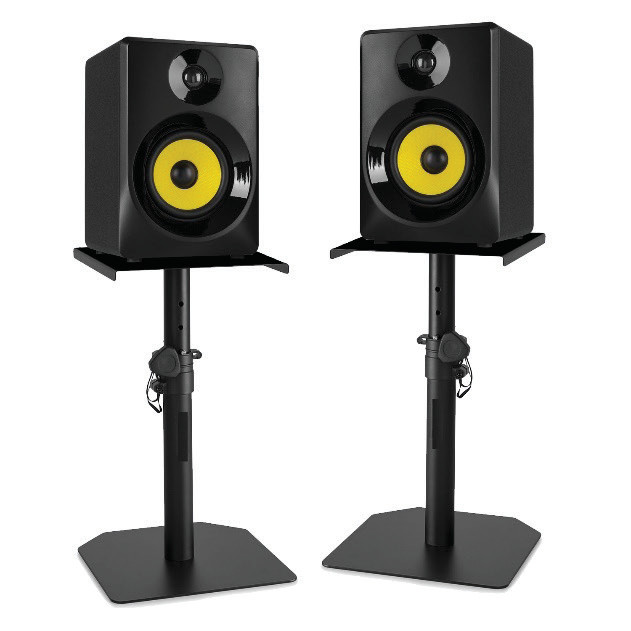
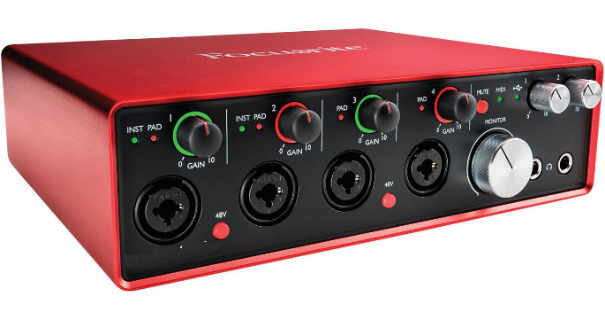
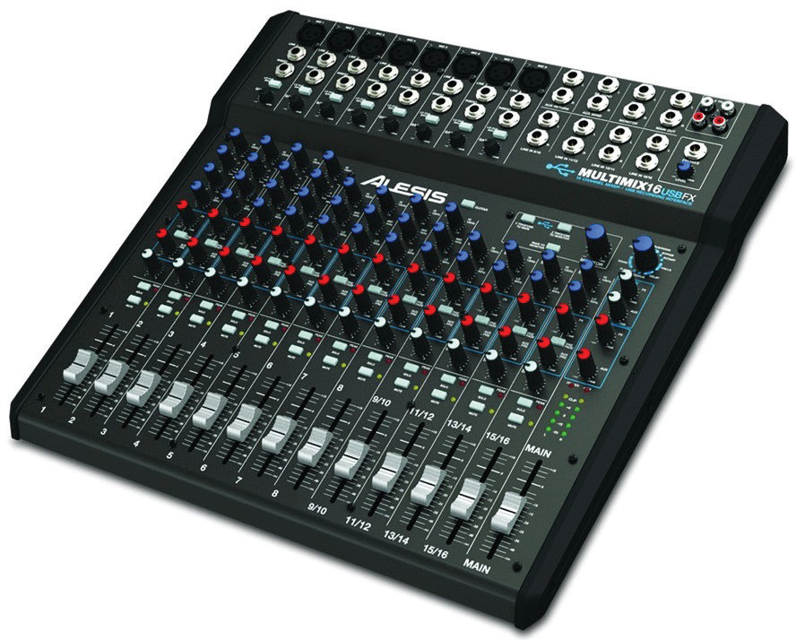

(e) Audio interface:
An audio interface, also known as a sound card, is a device that allows the transfer of sound to and from the computer. Microphone, MIDI controller, studio monitors and instruments such as guitars and others are connected to the audio interface. Figure 7.8 shows an example of an audio interface.

(f) Audio mixer:
This is an electronic device which combines the sounds of different audio signals. These audio signals may be of either a singer, musical instruments or both, picked up by a microphone or cable connected to an audio mixer. Figure 7.9 shows an example of an audio mixer.
